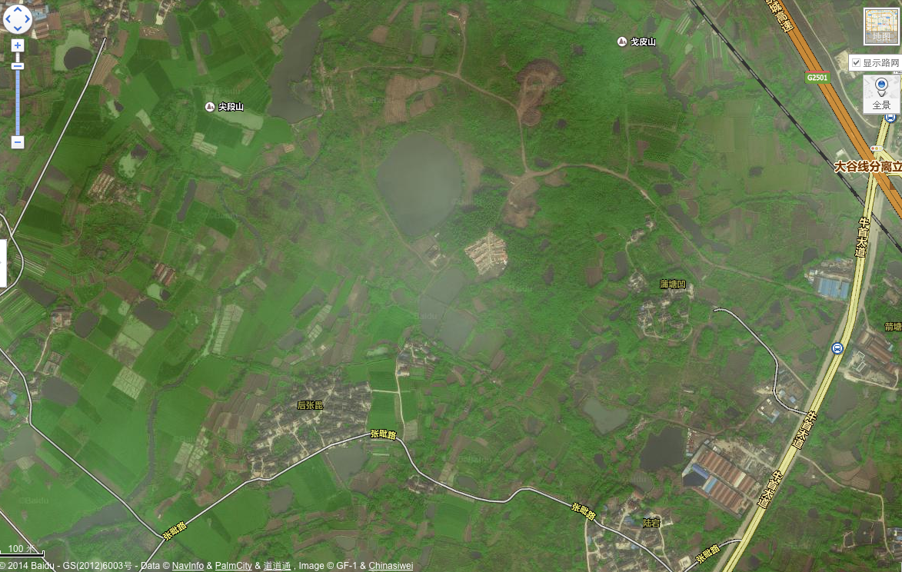

【兲】这是一块面积不大的地块，南京世昌地产在这里建了三幢楼房，两幢五层，一幢四层，总建筑面积4342平米。 1995年8月，南京世昌地产以宁夏路住宅楼的名义对外售房。耐人寻味的是，南京市房管局在颁发的销售许可证中称，该项目不得广告宣传。 1996年，成立两年后的南京世昌地产进行改制。 这时中国的房产市场并不景气，紧缩性的宏观调控政策落实后，经济过热势头放缓。据《南京市志》介绍，1995年后，南京商品房市场投入量涌增，而需求量减少。1995年，商品房上市量达644.7万平方米，销售量只有117万平方米；1996年，商品房上市量586万平方米，比上年下降9.1%，销售178万平方米，比上年增加52.1%，但因上市量远大于销售量，年末商品房空置量仍高达408万平方米。 1996年12月25日，团中央办公厅向江苏省工商局出示情况说明称：“我单位曾于1994年向你局申请注册成立南京世昌房地产开发公司，当时由于我单位资金紧张，所以该公司注册资本金未到位，对此我单位深表歉意。鉴于至今我单位仍无力筹措该公司的注册资金，且未投入任何资金，致使该公司无法正常经营，所以我单位决定不再作为该公司的出资者及主管部门，并同意该公司改制。” 而在南京世昌地产成立时，其企业注册资金来源情况说明称，注册资金1000万元，系团中央办公厅拨款。 1996年12月28日，南京世昌地产进行公司重组，注册

石婆婆巷的回迁户，对赵晋更是深有感受。沈真文（音）是其中的一户。据当地《江南时报》报道，1999年，沈家拆迁后按协议回迁到石婆婆巷14号楼内居住。按照当初开发商的承诺，沈家拿到一小套住房，以及16号楼下一间10平米的“门面房”，然而，此房有名无实，并不在街上，而是在小巷的里面，三米外即是围墙。沈家对此颇为不满，多次找到开发商交涉。 2002年5月10日晚上，沈真文再次找到开发商负责人，双方发生争执，后经派出所协调予以平息。第二天晚11时许，沈家夫妇准备休息时，几名陌生人来敲门，并称有人在楼下等，找他们去调换房子。为慎重起见，沈真文拨打了110报警。丹凤街派出所值班警察接到电话后，让他在楼下等。然而，沈真文和妻子下楼后不久，即有一伙人从暗中冲出，对其一顿暴打。 多年后，附近居民对财新记者称，那天下着雨，在石婆婆巷的松树前，十几个人像练拳一样打沈真文，他被打趴在一个水坑里，妻子大喊救命。 行凶者欲乘车逃离现场时，警察赶到，在群众的协助下，抓住一名身着黄色西装的行凶男子，但此人第二天就放走了。沈真文被送进医院抢救，其鼻骨与一根肋骨被打折，面部及脑部有挫伤，脾脏也被打坏。 《江南时报》记者当时采访到开发商一位赵姓副总，对方称，整个事件与该公司无关。此事后来不了了之。 “我们晓得他老头子是江苏省委秘书长，没人敢动他。”知情居民说。